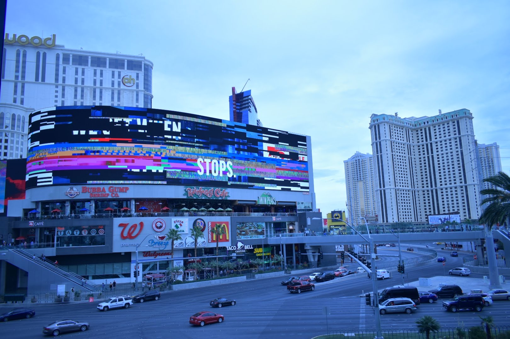

PHOTO


兵庫県川西市出身、音楽専門学校、音響技術学科に在学。
高校生の頃に「490'(しぐれ)」と言う名義で創作活動を始め、
音楽制作・DJ・MIX・イラスト・写真と幅広く活動している。
様々なイラストレーターとコラボしMVなども制作している。
UTAUとは、飴屋／菖蒲氏による、フリーでも使える歌声合成ソフト。
ユーザーが声を録音し自由に音源を作れるのが特徴。(pixiv百科事典抜粋)
本ソフトを用いた自作音源「鴉月 染卯(あづき しう)」を制作。
自分自身の声を録音し自作音源として制作されたキャラクター。
立ち絵は自らがデザイン原案を制作しイラストレーターじんなぎさ氏に、
描いていただいた共同作品。
中音域を得意とするウィスパーボイスを有しており、幅広い楽曲で使用できる設計。